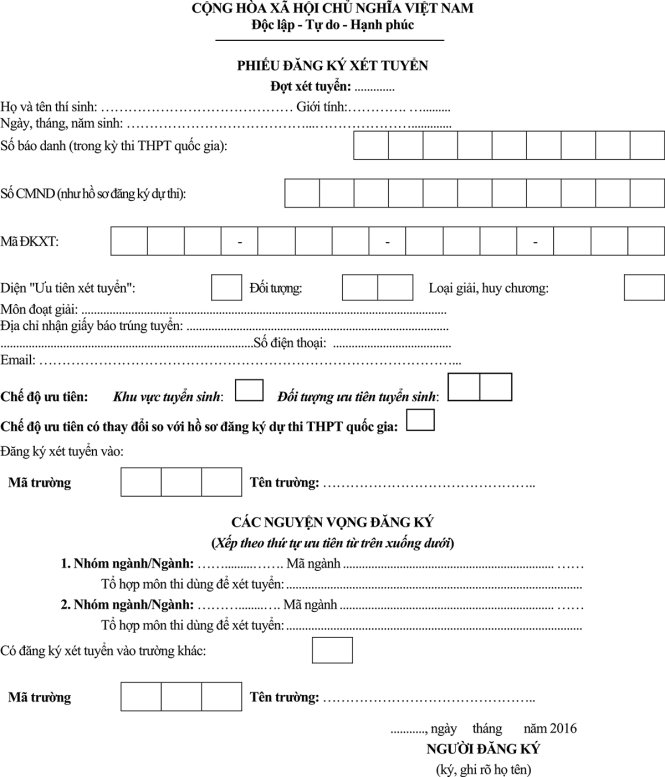

<section class="section-wrap" style="margin-top: 60px;">
	<div class="thongtin-wrap" style="position: relative;">
					<div class="quangcao" style="width: 275px; height: 800px; position: absolute; top: 20px; left: 0px;">
						
						
					</div>
	<div class="container infomation-content">
		<div class="infomation-content-us">
			<h1 class="the-article-title cms-title">Hướng dẫn điền phiếu đăng ký xét tuyển ĐH, CĐ 2016</h1>
		
				<div class="the-article-body cms-body">

					<em>Để đăng ký xét tuyển vào các trường ĐH, CĐ 2016, thí sinh phải điền vào phiếu đăng ký xét tuyển các thông tin cá nhân của mình một cách chính xác.</em><br /> <br /> Thí sinh lưu ý, mẫu phiếu đăng ký xét tuyển có thể nhận tại các trường hoặc tự tải về, sau đó điền đầy đủ thông tin cá nhân của mình và gửi về các trường. Thí sinh cần đọc kỹ và điền chính xác thông tin.<br /> <br /> 1- Số báo danh, số CMND: Cần ghi chính xác và thống nhất với thông tin trong hồ sơ đăng ký dự thi.<br /> <br /> 2- Mã đăng ký xét tuyển: Ghi chính xác mã đăng ký xét tuyển được quy định trong giấy chứng nhận kết quả thi của thí sinh.<br /> <br /> 3- Mục “Diện ưu tiên xét tuyển”:<br /> <br /> Thí sinh không dùng quyền tuyển thẳng, khi đăng ký xét tuyển vào trường cần đánh dấu “X” vào ô bên cạnh, đồng thời:<br /> <br /> a) Điền sau mục “Đối tượng” một trong các ký hiệu từ 01 đến 04 theo quy định sau:<br /> <br /> - Thí sinh đoạt giải trong kỳ thi chọn học sinh giỏi quốc gia: 01<br /> <br /> - Thí sinh đoạt giải trong cuộc thi khoa học, kỹ thuật cấp quốc gia: 02<br /> <br /> - Thí sinh đoạt huy chương vàng các giải vô địch hạng nhất quốc gia tổ chức một lần trong năm: 03<br /> <br /> - Thí sinh được Ủy ban TDTT có quyết định công nhận là kiện tướng quốc gia: 04.<br /> <br /> b) Điền sau mục “Loại giải, Huy chương”: giải, huy chương mình đã đạt được.<br /> <br /> c) Điền sau mục “Môn đoạt giải”: môn học hoặc môn thể thao đã đoạt giải hoặc huy chương. Đối với thí sinh đoạt giải trong cuộc thi khoa học, kỹ thuật cấp quốc gia, ghi tóm tắt tên đề tài đã đoạt giải.<br /> <br /> 4. Mục “Chế độ ưu tiên”:<br /> <br /> Nếu thí sinh cần điều chỉnh chế độ ưu tiên (so với thông tin trong phiếu ĐKDT), cần đánh dấu “X” vào ô tương ứng và trong mục “khu vực ưu tiên” điền một trong các mã&nbsp; KV1, KV2-NT, KV2 hoặc&nbsp; KV3 tương ứng với khu vực ưu tiên của mình. Trong mục “đối tượng ưu tiên” điền một trong các ký hiệu từ 01 đến 07 tương ứng với đối tượng ưu tiên của mình (nếu không thuộc đối tượng ưu tiên thì bỏ trống).<br /> <br /> 5. Thí sinh khẳng định lại chế độ ưu tiên theo khu vực và ưu tiên theo đối tượng tuyển sinh. Nếu chế độ ưu tiên khác so với hồ sơ đăng ký dự thi thì phải đánh dấu vào ô “Chế độ ưu tiên có thay đổi so với hồ sơ đăng ký dự thi THPT quốc gia”. Thí sinh chịu trách nhiệm tính chính xác của thông tin này.<br /> <br /> 6. Mục “Các nguyện vọng đăng ký”:<br /> <br /> Thí sinh không nhất thiết phải đăng ký đủ tất cả các nguyện vọng. Những nguyện vọng không đăng ký phải gạch chéo để khẳng định.<br /> <br /> 7. Mục “Có đăng ký xét tuyển vào trường khác”<br /> <br /> - Thí sinh chỉ đăng ký xét tuyển vào 1 trường hoặc 1 nhóm trường: không điền thông tin vào mục này;<br /> <br /> - Thí sinh đăng ký xét tuyển vào 2 trường hoặc 1 trường và 1 nhóm trường: đánh dấu “X” vào ô bên cạnh và điền đầy đủ các thông tin về trường thứ 2 mà thí sinh đăng ký xét tuyển.<br /> <br /> Khi điền phiếu đăng ký xét tuyển, thí sinh cần ghi đầy đủ địa chỉ nhận giấy báo trúng tuyển, email và đặc biệt là số điện thoại để các trường có thể liên hệ khi cần trao đổi thông tin.
					<table class="picture" align="center">
						<tbody>
						<tr>
						<td ></td>
						</tr>
						<tr>
						<td class="pCaption caption"><em>Mẫu phiếu đăng ký xét tuyển ĐH, CĐ 2016</em></td>
						</tr>
						</tbody>
						</table>
						</div>
		</div>
	</div>
	</div>
</section>